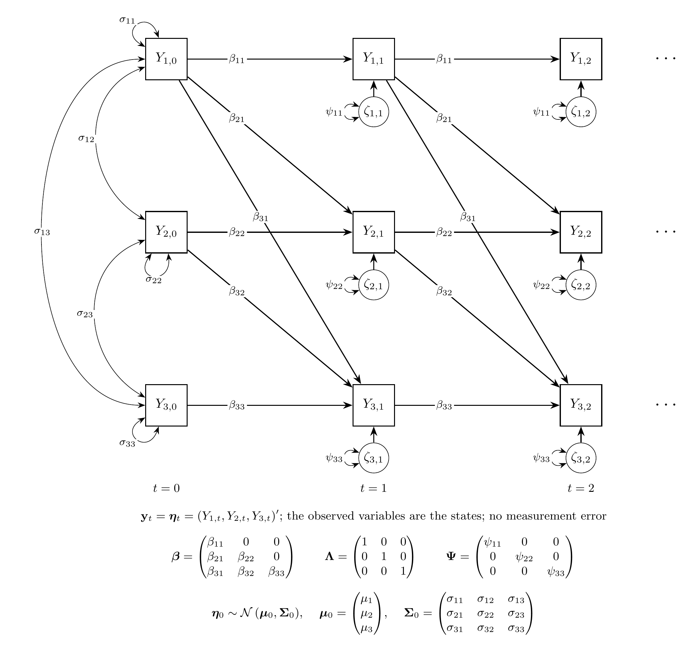
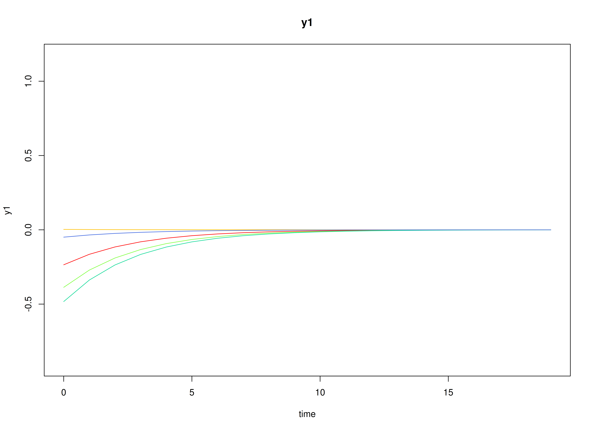
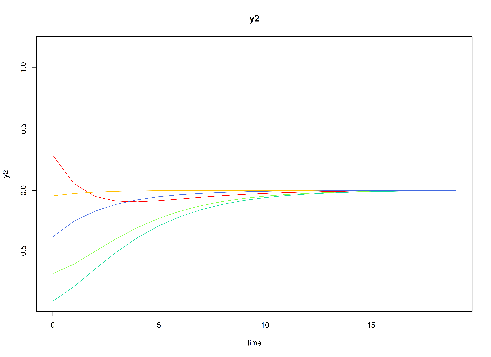
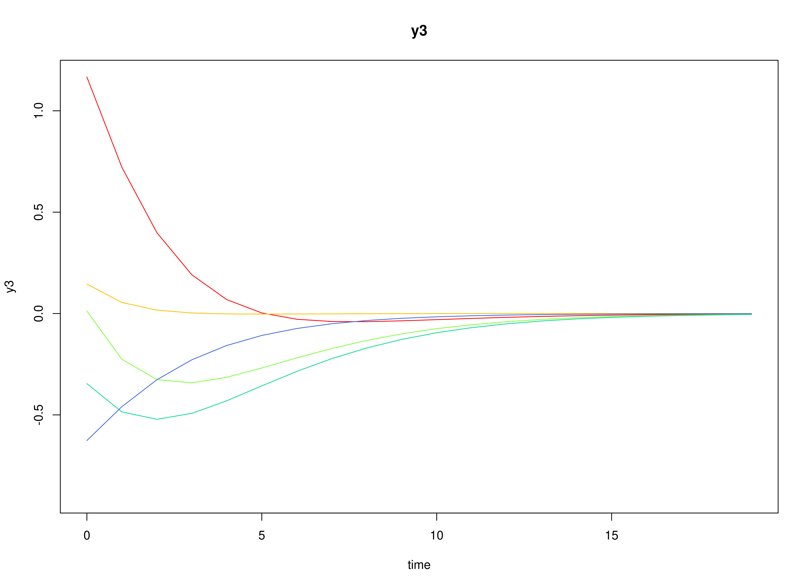
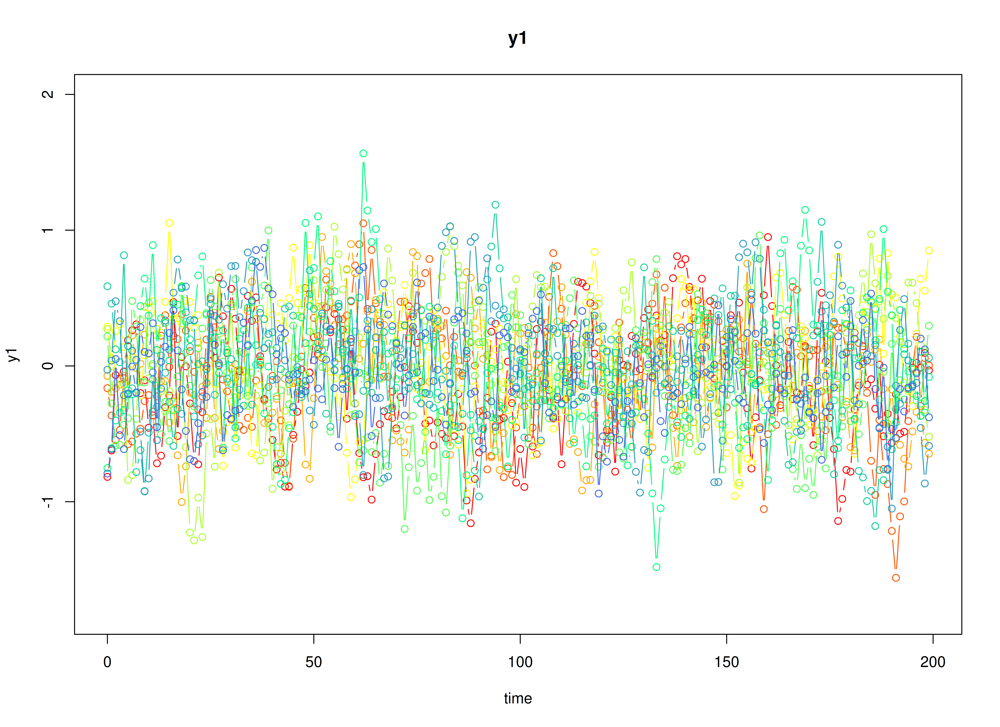
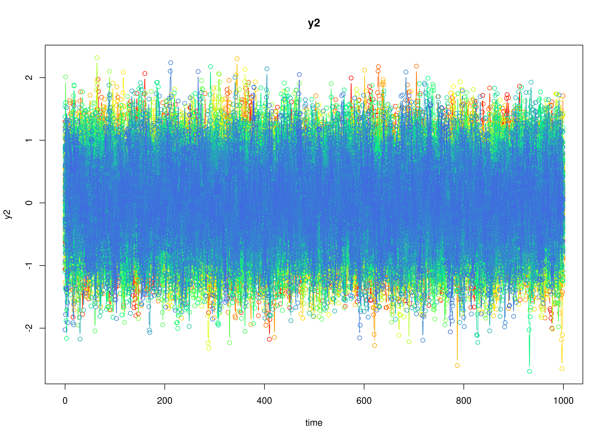
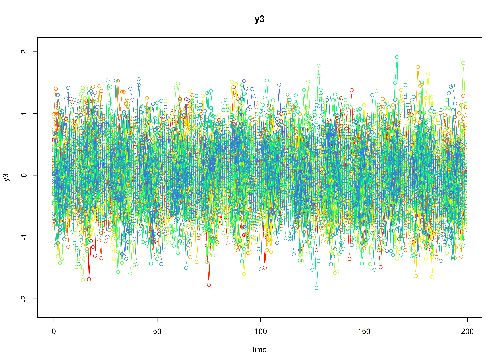
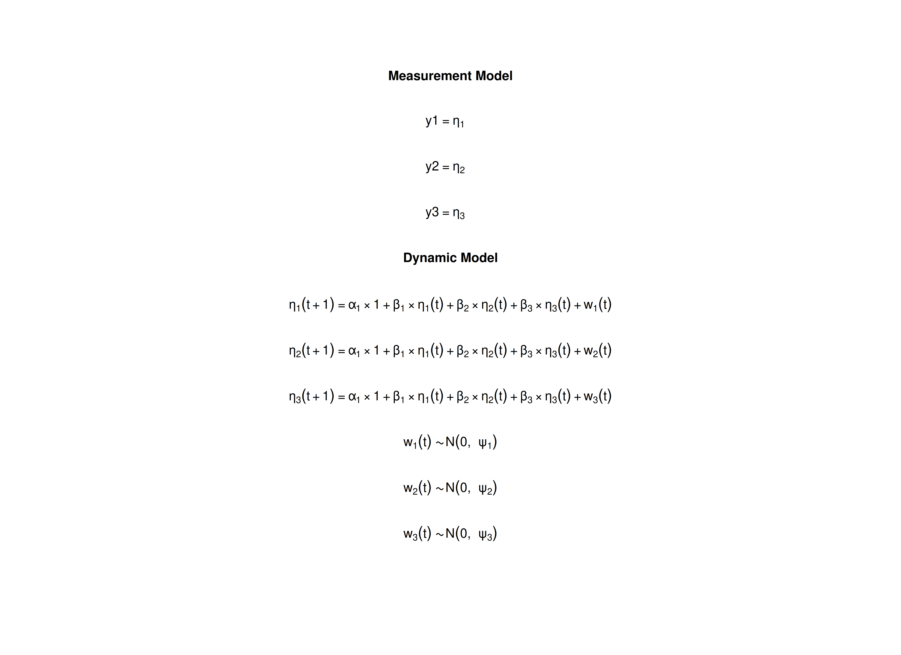

The Vector Autoregressive Model
Ivan Jacob Agaloos Pesigan
2026-11-02
Source:vignettes/var.Rmd
var.RmdOverview
The vector autoregressive (VAR) model describes how a set of variables measured repeatedly on the same person carry over and influence each other from one occasion to the next. For example, today’s stress may predict tomorrow’s stress (carry-over), and today’s stress may also predict tomorrow’s negative affect (cross-lagged effect).
This tutorial does three things:
- It writes the first-order VAR model as a state space model.
- It simulates data from the model with
SimSSMVARFixed(), with every individual sharing the same parameters. - It fits the model to the simulated data with the
dynrandOpenMxpackages and compares both sets of estimates with the values used to simulate the data.
No prior knowledge of state space models is needed. A state space model has two parts: a measurement model that links what we observe to underlying (latent) states, and a dynamic model that describes how those states change over time. In the VAR model, the variables are assumed to be measured without error, so the measurement part is simple, and all the interest is in the dynamics.
Model
The measurement model is given by \[\mathbf{y}_{i, t} = \boldsymbol{\eta}_{i, t}\] where \(\mathbf{y}_{i, t}\) represents a vector of observed variables and \(\boldsymbol{\eta}_{i, t}\) a vector of latent variables for individual \(i\) and time \(t\). Since the observed and latent variables are equal, we only generate data from the dynamic structure.
The dynamic structure is given by \[\boldsymbol{\eta}_{i, t} = \boldsymbol{\alpha} + \boldsymbol{\beta} \boldsymbol{\eta}_{i, t - 1} + \boldsymbol{\zeta}_{i, t}, \quad \mathrm{with} \quad \boldsymbol{\zeta}_{i, t} \sim \mathcal{N} \left( \mathbf{0}, \boldsymbol{\Psi} \right)\] where \(\boldsymbol{\eta}_{i, t}\), \(\boldsymbol{\eta}_{i, t - 1}\), and \(\boldsymbol{\zeta}_{i, t}\) are random variables, and \(\boldsymbol{\alpha}\), \(\boldsymbol{\beta}\), and \(\boldsymbol{\Psi}\) are model parameters. Here, \(\boldsymbol{\eta}_{i, t}\) is a vector of latent variables at time \(t\) and individual \(i\), \(\boldsymbol{\eta}_{i, t - 1}\) represents a vector of latent variables at time \(t - 1\) and individual \(i\), and \(\boldsymbol{\zeta}_{i, t}\) represents a vector of dynamic noise at time \(t\) and individual \(i\). \(\boldsymbol{\alpha}\) denotes a vector of intercepts, \(\boldsymbol{\beta}\) a matrix of autoregression and cross regression coefficients, and \(\boldsymbol{\Psi}\) the covariance matrix of \(\boldsymbol{\zeta}_{i, t}\).
In words, each variable at time \(t\) is a weighted sum of all the variables at time \(t - 1\), plus an intercept and a random shock. The weights are the elements of \(\boldsymbol{\beta}\):
- A diagonal element \(\beta_{jj}\) is the autoregressive effect, how much of variable \(j\) carries over to the next occasion. Values closer to 1 mean the variable changes slowly (high inertia).
- An off-diagonal element \(\beta_{jk}\) is the cross-lagged effect of variable \(k\) at time \(t - 1\) on variable \(j\) at time \(t\). Note the order: the row is the outcome, the column is the predictor.
The shocks \(\boldsymbol{\zeta}_{i, t}\) stand for everything that moves the variables that the model does not explain, for example, events that happen between occasions. For the process to settle around a stable mean, all eigenvalues of \(\boldsymbol{\beta}\) must have modulus less than 1.
An alternative representation of the dynamic noise is given by \[\boldsymbol{\zeta}_{i, t}
=
\boldsymbol{\Psi}^{\frac{1}{2}}
\mathbf{z}_{i, t},
\quad
\mathrm{with}
\quad
\mathbf{z}_{i, t}
\sim
\mathcal{N}
\left(
\mathbf{0},
\mathbf{I}
\right)\] where \(\left(
\boldsymbol{\Psi}^{\frac{1}{2}} \right) \left(
\boldsymbol{\Psi}^{\frac{1}{2}} \right)^{\prime} =
\boldsymbol{\Psi}\) . This is how the noise is simulated:
independent standard normal draws \(\mathbf{z}_{i, t}\) are multiplied by a
square root of \(\boldsymbol{\Psi}\).
The functions in simStateSpace take this square root, the
lower triangular Cholesky factor of \(\boldsymbol{\Psi}\), as the argument
psi_l.
Diagram

The model in state space form, for the first three occasions (\(t = 0, 1, 2\)). The observed variables
(squares) are the state, \(\mathbf{y}_{t} =
\boldsymbol{\eta}_{t}\), so \(\boldsymbol{\Lambda}\) is the identity
matrix and there is no measurement error. The horizontal arrows are the
autoregressive effects and the diagonal arrows the cross-lagged effects,
the elements of \(\boldsymbol{\beta}\);
only the nonzero elements in this example are drawn. \(\zeta_{j, t}\) is the process noise, with
variance \(\psi_{jj}\), from \(t = 1\) on. A loop on a variable is its
variance and a curved two-headed arrow a covariance. At \(t = 0\), the initial condition \(\boldsymbol{\eta}_{0} \sim \mathcal{N} \left(
\boldsymbol{\mu}_{0}, \boldsymbol{\Sigma}_{0} \right)\) gives the
variances \(\sigma_{jj}\) and
covariances \(\sigma_{jk}\) of the
variables. SimSSMVARFixed() takes beta,
mu0, and the Cholesky factors of \(\boldsymbol{\Psi}\) and \(\boldsymbol{\Sigma}_{0}\)
(psi_l and sigma0_l).
Data Generation
Notation
Let \(t = 200\) be the number of time points and \(n = 50\) be the number of individuals.
Let the initial condition \(\boldsymbol{\eta}_{0}\) be given by
\[\boldsymbol{\eta}_{0} \sim \mathcal{N} \left( \boldsymbol{\mu}_{0}, \boldsymbol{\Sigma}_{0} \right)\]
\[\boldsymbol{\mu}_{0} = \left( \begin{array}{c} 0 \\ 0 \\ 0 \\ \end{array} \right)\]
\[\boldsymbol{\Sigma}_{0} = \left( \begin{array}{ccc} 0.1960784 & 0.1183232 & 0.0298539 \\ 0.1183232 & 0.3437711 & 0.1381855 \\ 0.0298539 & 0.1381855 & 0.2663828 \\ \end{array} \right) .\]
Let the constant vector \(\boldsymbol{\alpha}\) be given by
\[\boldsymbol{\alpha} = \left( \begin{array}{c} 0 \\ 0 \\ 0 \\ \end{array} \right) .\]
Let the transition matrix \(\boldsymbol{\beta}\) be given by
\[\boldsymbol{\beta} = \left( \begin{array}{ccc} 0.7 & 0 & 0 \\ 0.5 & 0.6 & 0 \\ -0.1 & 0.4 & 0.5 \\ \end{array} \right) .\]
Read the columns as predictors and the rows as outcomes. Each variable carries over to the next occasion (autoregressive effects 0.7, 0.6, and 0.5). In addition, \(\eta_{1}\) predicts later \(\eta_{2}\) (0.5), \(\eta_{2}\) predicts later \(\eta_{3}\) (0.4), and \(\eta_{1}\) has a small negative effect on later \(\eta_{3}\) (-0.1). Because \(\boldsymbol{\beta}\) is lower triangular, its eigenvalues are its diagonal elements, all less than 1, so the process is stable.
Let the dynamic process noise \(\boldsymbol{\Psi}\) be given by
\[\boldsymbol{\Psi} = \left( \begin{array}{ccc} 0.1 & 0 & 0 \\ 0 & 0.1 & 0 \\ 0 & 0 & 0.1 \\ \end{array} \right) .\]
The initial condition describes where each individual starts. Here,
the mean vector and covariance matrix of \(\boldsymbol{\eta}_{0}\) are the
model-implied mean and covariance of the stable process, computed with
SSMMeanEta() and SSMCovEta(), so the data are
stationary from the first time point.
R Function Arguments
The simulation functions take covariance matrices as lower triangular
Cholesky factors (the arguments ending in _l).
n
#> [1] 50
time
#> [1] 200
mu0
#> [1] 0 0 0
sigma0
#> [,1] [,2] [,3]
#> [1,] 0.19607843 0.1183232 0.02985385
#> [2,] 0.11832319 0.3437711 0.13818551
#> [3,] 0.02985385 0.1381855 0.26638284
sigma0_l # sigma0_l <- t(chol(sigma0))
#> [,1] [,2] [,3]
#> [1,] 0.44280744 0.0000000 0.000000
#> [2,] 0.26721139 0.5218900 0.000000
#> [3,] 0.06741949 0.2302597 0.456966
alpha
#> [1] 0 0 0
beta
#> [,1] [,2] [,3]
#> [1,] 0.7 0.0 0.0
#> [2,] 0.5 0.6 0.0
#> [3,] -0.1 0.4 0.5
psi
#> [,1] [,2] [,3]
#> [1,] 0.1 0.0 0.0
#> [2,] 0.0 0.1 0.0
#> [3,] 0.0 0.0 0.1
psi_l # psi_l <- t(chol(psi))
#> [,1] [,2] [,3]
#> [1,] 0.3162278 0.0000000 0.0000000
#> [2,] 0.0000000 0.3162278 0.0000000
#> [3,] 0.0000000 0.0000000 0.3162278Visualizing the Dynamics Without Process Noise (n = 5 with Different Initial Condition)
To see what \(\boldsymbol{\beta}\) alone does, we first simulate five individuals with the process noise set to zero. Each individual starts at a different point, and the trajectories return to the mean at a speed set by \(\boldsymbol{\beta}\).



Using the SimSSMVARFixed Function from the
simStateSpace Package to Simulate Data
Now we add the process noise and simulate the full data set.
as.data.frame() returns the data in long format, one row
per individual and time point, with the columns id,
time, y1, y2, and
y3.
library(simStateSpace)
sim <- SimSSMVARFixed(
n = n,
time = time,
mu0 = mu0,
sigma0_l = sigma0_l,
alpha = alpha,
beta = beta,
psi_l = psi_l
)
data <- as.data.frame(sim)
head(data)
#> id time y1 y2 y3
#> 1 1 0 -0.81728749 0.01319023 0.57975035
#> 2 1 1 -0.62264147 -0.94877859 0.54422379
#> 3 1 2 -0.06731464 -0.69530903 -0.09626706
#> 4 1 3 -0.09174342 -0.44804477 -0.27983813
#> 5 1 4 -0.04104160 -0.72769549 -0.19238403
#> 6 1 5 0.18907246 -0.81602072 -0.73831208
summary(data)
#> id time y1 y2
#> Min. : 1.0 Min. : 0.00 Min. :-1.5605680 Min. :-2.136497
#> 1st Qu.:13.0 1st Qu.: 49.75 1st Qu.:-0.2988210 1st Qu.:-0.399645
#> Median :25.5 Median : 99.50 Median :-0.0007190 Median : 0.005257
#> Mean :25.5 Mean : 99.50 Mean :-0.0009849 Mean : 0.002916
#> 3rd Qu.:38.0 3rd Qu.:149.25 3rd Qu.: 0.2933423 3rd Qu.: 0.400716
#> Max. :50.0 Max. :199.00 Max. : 1.5653685 Max. : 2.065411
#> y3
#> Min. :-1.824302
#> 1st Qu.:-0.339985
#> Median : 0.008929
#> Mean : 0.011512
#> 3rd Qu.: 0.363642
#> Max. : 1.913883
plot(sim)


Model Fitting
The same simulated data are fitted with two programs that estimate
state space models by maximum likelihood with the Kalman filter:
dynr and OpenMx. The section Population Values
and Estimates compares their estimates with the population values.
dynr
We fit the model with dynr, which estimates state space
models by maximum likelihood using the Kalman filter. A
dynr model is built from pieces that match the equations
above: the data, the initial condition, the measurement model, the
dynamic model, and the noise. Each parameter gets a name (for example,
beta_2_1 for \(\beta_{21}\)), and the same name used in
two places means one shared parameter. The starting values are set to
the population values for convenience; with real data, they would be
rough guesses.
Prepare Initial Condition
The mean \(\boldsymbol{\mu}_{0}\)
and covariance \(\boldsymbol{\Sigma}_{0}\) of the initial
state are estimated. The covariance matrix is symmetric, so
sigma0_2_1 appears both above and below the diagonal.
dynr_initial <- dynr::prep.initial(
values.inistate = mu0,
params.inistate = c("mu0_1_1", "mu0_2_1", "mu0_3_1"),
values.inicov = sigma0,
params.inicov = matrix(
data = c(
"sigma0_1_1", "sigma0_2_1", "sigma0_3_1",
"sigma0_2_1", "sigma0_2_2", "sigma0_3_2",
"sigma0_3_1", "sigma0_3_2", "sigma0_3_3"
),
nrow = 3
)
)Prepare Measurement Model
The measurement model \(\mathbf{y}_{i, t} =
\boldsymbol{\eta}_{i, t}\) is an identity matrix of loadings,
with no free parameters ("fixed").
dynr_measurement <- dynr::prep.measurement(
values.load = diag(3),
params.load = matrix(data = "fixed", nrow = 3, ncol = 3),
state.names = c("eta_1", "eta_2", "eta_3"),
obs.names = c("y1", "y2", "y3")
)Prepare Dynamic Process
Each formula is one row of the dynamic equation: the intercept \(\alpha_{j}\) plus the effects \(\beta_{jk}\) of the three variables at the
previous occasion. isContinuousTime = FALSE makes this a
discrete-time model.
dynr_dynamics <- dynr::prep.formulaDynamics(
formula = list(
eta_1 ~ alpha_1_1 * 1 + beta_1_1 * eta_1 + beta_1_2 * eta_2 + beta_1_3 * eta_3,
eta_2 ~ alpha_2_1 * 1 + beta_2_1 * eta_1 + beta_2_2 * eta_2 + beta_2_3 * eta_3,
eta_3 ~ alpha_3_1 * 1 + beta_3_1 * eta_1 + beta_3_2 * eta_2 + beta_3_3 * eta_3
),
startval = c(
alpha_1_1 = alpha[1], alpha_2_1 = alpha[2], alpha_3_1 = alpha[3],
beta_1_1 = beta[1, 1], beta_1_2 = beta[1, 2], beta_1_3 = beta[1, 3],
beta_2_1 = beta[2, 1], beta_2_2 = beta[2, 2], beta_2_3 = beta[2, 3],
beta_3_1 = beta[3, 1], beta_3_2 = beta[3, 2], beta_3_3 = beta[3, 3]
),
isContinuousTime = FALSE
)Prepare Process Noise
The latent noise covariance \(\boldsymbol{\Psi}\) is estimated. The measurement error covariance is fixed at zero, because the variables are measured without error in this model.
dynr_noise <- dynr::prep.noise(
values.latent = psi,
params.latent = matrix(
data = c(
"psi_1_1", "psi_2_1", "psi_3_1",
"psi_2_1", "psi_2_2", "psi_3_2",
"psi_3_1", "psi_3_2", "psi_3_3"
),
nrow = 3
),
values.observed = matrix(data = 0, nrow = 3, ncol = 3),
params.observed = matrix(data = "fixed", nrow = 3, ncol = 3)
)Prepare the Model
The pieces are put together into one model. dynr writes
the model as C code to outfile and compiles it. The plot
below shows the model equations with the parameter names.
model <- dynr::dynr.model(
data = dynr_data,
initial = dynr_initial,
measurement = dynr_measurement,
dynamics = dynr_dynamics,
noise = dynr_noise,
outfile = "var.c"
)
Fit the Model
results <- dynr::dynr.cook(
model,
debug_flag = TRUE,
verbose = FALSE
)
#> [1] "Get ready!!!!"
#> using C compiler: ‘gcc (Ubuntu 15.2.0-16ubuntu1) 15.2.0’
#> Optimization function called.
#> Starting Hessian calculation ...
#> Finished Hessian calculation.
#> Original exit flag: 3
#> Modified exit flag: 3
#> Optimization terminated successfully: ftol_rel or ftol_abs was reached.
#> Original fitted parameters: 0.00002663477 0.001631891 0.004238975 0.6866125
#> 0.01194593 -0.01225832 0.4887006 0.6133306 0.003168878 -0.1093111 0.4124866
#> 0.4950797 -2.300106 -0.009644434 -0.01412868 -2.312356 0.00605374 -2.303423
#> -0.04988252 -0.02863863 0.02786683 -1.899028 0.4447028 0.05947617 -1.140395
#> 0.2969417 -1.901927
#>
#> Transformed fitted parameters: 0.00002663477 0.001631891 0.004238975 0.6866125
#> 0.01194593 -0.01225832 0.4887006 0.6133306 0.003168878 -0.1093111 0.4124866
#> 0.4950797 0.1002482 -0.0009668374 -0.001416375 0.09903696 0.0006131477
#> 0.09993993 -0.04988252 -0.02863863 0.02786683 0.1497141 0.06657829 0.008904422
#> 0.3493004 0.09888994 0.177999
#>
#> Doing end processing
#> Successful trial
#> Total Time: 2.080689
#> Backend Time: 2.072147Summary
The summary lists each estimate with its standard error, \(t\) value, confidence interval, and \(p\) value.
summary(results)
#> Coefficients:
#> Estimate Std. Error t value ci.lower ci.upper
#> alpha_1_1 0.00002663 0.00317501 0.008 -0.00619628 0.00624955
#> alpha_2_1 0.00163189 0.00315577 0.517 -0.00455331 0.00781709
#> alpha_3_1 0.00423897 0.00317014 1.337 -0.00197438 0.01045233
#> beta_1_1 0.68661253 0.00813341 84.419 0.67067135 0.70255372
#> beta_1_2 0.01194593 0.00683576 1.748 -0.00145192 0.02534378
#> beta_1_3 -0.01225832 0.00692588 -1.770 -0.02583279 0.00131615
#> beta_2_1 0.48870056 0.00808421 60.451 0.47285581 0.50454532
#> beta_2_2 0.61333060 0.00679435 90.271 0.60001392 0.62664729
#> beta_2_3 0.00316888 0.00688386 0.460 -0.01032324 0.01666100
#> beta_3_1 -0.10931114 0.00812080 -13.461 -0.12522761 -0.09339467
#> beta_3_2 0.41248661 0.00682532 60.435 0.39910923 0.42586399
#> beta_3_3 0.49507968 0.00691521 71.593 0.48152612 0.50863324
#> psi_1_1 0.10024823 0.00142126 70.535 0.09746260 0.10303385
#> psi_2_1 -0.00096684 0.00099896 -0.968 -0.00292476 0.00099108
#> psi_3_1 -0.00141637 0.00100354 -1.411 -0.00338328 0.00055053
#> psi_2_2 0.09903696 0.00140409 70.534 0.09628499 0.10178894
#> psi_3_2 0.00061315 0.00099738 0.615 -0.00134168 0.00256798
#> psi_3_3 0.09993993 0.00141691 70.534 0.09716284 0.10271702
#> mu0_1_1 -0.04988252 0.05472083 -0.912 -0.15713337 0.05736833
#> mu0_2_1 -0.02863863 0.08357415 -0.343 -0.19244095 0.13516370
#> mu0_3_1 0.02786683 0.05966621 0.467 -0.08907679 0.14481045
#> sigma0_1_1 0.14971412 0.02993649 5.001 0.09103968 0.20838856
#> sigma0_2_1 0.06657829 0.03367421 1.977 0.00057806 0.13257853
#> sigma0_3_1 0.00890442 0.02311409 0.385 -0.03639836 0.05420720
#> sigma0_2_2 0.34930036 0.06985425 5.000 0.21238855 0.48621217
#> sigma0_3_2 0.09888994 0.03792208 2.608 0.02456402 0.17321586
#> sigma0_3_3 0.17799895 0.03559223 5.001 0.10823946 0.24775844
#> Pr(>|t|)
#> alpha_1_1 0.4967
#> alpha_2_1 0.3025
#> alpha_3_1 0.0906 .
#> beta_1_1 <0.0000000000000002 ***
#> beta_1_2 0.0403 *
#> beta_1_3 0.0384 *
#> beta_2_1 <0.0000000000000002 ***
#> beta_2_2 <0.0000000000000002 ***
#> beta_2_3 0.3226
#> beta_3_1 <0.0000000000000002 ***
#> beta_3_2 <0.0000000000000002 ***
#> beta_3_3 <0.0000000000000002 ***
#> psi_1_1 <0.0000000000000002 ***
#> psi_2_1 0.1666
#> psi_3_1 0.0791 .
#> psi_2_2 <0.0000000000000002 ***
#> psi_3_2 0.2694
#> psi_3_3 <0.0000000000000002 ***
#> mu0_1_1 0.1810
#> mu0_2_1 0.3659
#> mu0_3_1 0.3202
#> sigma0_1_1 <0.0000000000000002 ***
#> sigma0_2_1 0.0240 *
#> sigma0_3_1 0.3500
#> sigma0_2_2 <0.0000000000000002 ***
#> sigma0_3_2 0.0046 **
#> sigma0_3_3 <0.0000000000000002 ***
#> ---
#> Signif. codes: 0 '***' 0.001 '**' 0.01 '*' 0.05 '.' 0.1 ' ' 1
#>
#> -2 log-likelihood value at convergence = 16078.14
#> AIC = 16132.14
#> BIC = 16326.82OpenMx: State Space Model
OpenMx (Neale et al.,
2016) fits the same state space model with its own Kalman filter
(OpenMx::mxExpectationStateSpace(); Hunter (2018)). Its matrices have the names used
in engineering: A is the transition matrix \(\boldsymbol{\beta}\), B holds
the intercepts of the dynamic model, C is the loading
matrix \(\boldsymbol{\Lambda}\),
D holds the intercepts of the measurement model,
Q is the process noise covariance matrix, and
R is the measurement error covariance matrix. The parameter
labels are the dynr names; as in dynr, a label used in two places is one
shared parameter, and the starting values are the population values.
Two details differ from dynr. First, OpenMx reads the data as a single time series. To start the filter again at the first occasion of every individual, each individual gets a group, and all groups use the matrices of one parent model, so every individual has the same parameters. Second, OpenMx starts the filter one occasion before the first row, so the first row has the state mean \(\mathbf{A} \mathbf{x}_{0} + \mathbf{B} \mathbf{u}\) and the state covariance \(\mathbf{A} \mathbf{P}_{0} \mathbf{A}^{\prime} + \mathbf{Q}\), with the constant input \(\mathbf{u} = 1\). Setting \(\mathbf{x}_{0} = \mathbf{A}^{-1} \left( \boldsymbol{\mu}_{0} - \mathbf{B} \mathbf{u} \right)\) and \(\mathbf{P}_{0} = \mathbf{A}^{-1} \left( \boldsymbol{\Sigma}_{0} - \mathbf{Q} \right) \left( \mathbf{A}^{-1} \right)^{\prime}\) gives the first occasion the initial condition of the model, so the likelihood is the same as in dynr. This needs an invertible \(\mathbf{A}\), which holds here.
The two helper functions below are the same in every vignette of the
package. MxMat() makes an OpenMx matrix from values and
dynr-style labels ("fixed" marks a fixed element), and
FitMxSSM() builds the groups and fits the model.
MxMat <- function(values, labels, name) {
values <- as.matrix(values)
labels <- matrix(
data = labels,
nrow = nrow(values),
ncol = ncol(values)
)
free <- labels != "fixed"
labels[!free] <- NA
OpenMx::mxMatrix(
type = "Full",
values = values,
free = free,
labels = labels,
name = name
)
}
FitMxSSM <- function(data, observed, matrices, name) {
# the groups refer to the matrices of the parent model
shared <- function(x) {
paste0(name, ".", x)
}
expectation <- OpenMx::mxExpectationStateSpace(
A = shared("A"),
B = shared("B"),
C = shared("C"),
D = shared("D"),
Q = shared("Q"),
R = shared("R"),
x0 = shared("x0"),
P0 = shared("P0"),
u = shared("u")
)
# OpenMx needs the names of the observed variables and of the states on C
for (i in seq_along(matrices)) {
if (matrices[[i]]$name == "C") {
dimnames(matrices[[i]]) <- list(
observed,
paste0("eta_", seq_len(ncol(matrices[[i]]$values)))
)
}
}
persons <- split(
x = data[, observed, drop = FALSE],
f = data[, "id"]
)
groups <- paste0("id_", names(persons))
submodels <- lapply(
X = seq_along(persons),
FUN = function(i) {
OpenMx::mxModel(
name = groups[i],
expectation,
OpenMx::mxFitFunctionML(),
OpenMx::mxData(
observed = persons[[i]],
type = "raw"
)
)
}
)
model <- OpenMx::mxModel(
name = name,
matrices,
OpenMx::mxMatrix(
type = "Unit",
nrow = 1,
ncol = 1,
name = "u"
),
# the first occasion gets the initial condition of the model
OpenMx::mxAlgebra(
expression = solve(A) %*% (mu0 - B %*% u),
name = "x0"
),
OpenMx::mxAlgebra(
expression = solve(A) %*% (sigma0 - Q) %*% t(solve(A)),
name = "P0"
),
submodels,
OpenMx::mxFitFunctionMultigroup(groups = groups)
)
# retries from perturbed starting values only if the first run fails
OpenMx::mxTryHard(
model = model,
extraTries = 5,
silent = TRUE
)
}The matrices of the model, with the dynr labels. The loadings are an
identity matrix, and there is no measurement error (R is
zero).
labels_beta <- matrix(
data = c(
"beta_1_1", "beta_2_1", "beta_3_1",
"beta_1_2", "beta_2_2", "beta_3_2",
"beta_1_3", "beta_2_3", "beta_3_3"
),
nrow = 3
)
labels_psi <- matrix(
data = c(
"psi_1_1", "psi_2_1", "psi_3_1",
"psi_2_1", "psi_2_2", "psi_3_2",
"psi_3_1", "psi_3_2", "psi_3_3"
),
nrow = 3
)
labels_sigma0 <- matrix(
data = c(
"sigma0_1_1", "sigma0_2_1", "sigma0_3_1",
"sigma0_2_1", "sigma0_2_2", "sigma0_3_2",
"sigma0_3_1", "sigma0_3_2", "sigma0_3_3"
),
nrow = 3
)
mx_matrices <- list(
MxMat(values = beta, labels = labels_beta, name = "A"),
MxMat(
values = alpha,
labels = c("alpha_1_1", "alpha_2_1", "alpha_3_1"),
name = "B"
),
MxMat(values = diag(3), labels = "fixed", name = "C"),
MxMat(values = rep(x = 0, times = 3), labels = "fixed", name = "D"),
MxMat(values = psi, labels = labels_psi, name = "Q"),
MxMat(
values = matrix(data = 0, nrow = 3, ncol = 3),
labels = "fixed",
name = "R"
),
MxMat(
values = mu0,
labels = c("mu0_1_1", "mu0_2_1", "mu0_3_1"),
name = "mu0"
),
MxMat(values = sigma0, labels = labels_sigma0, name = "sigma0")
)fit_mx_ssm <- FitMxSSM(
data = data,
observed = c("y1", "y2", "y3"),
matrices = mx_matrices,
name = "var"
)
#>
Beginning initial fit attempt
Fit attempt 0, fit=16078.140497466, new current best! (was 16107.4834291)
#>
#> Solution found! Final fit=16078.14 (started at 16107.483) (1 attempt(s): 1 valid, 0 errors)
summary(fit_mx_ssm)
#> Summary of var
#>
#> free parameters:
#> name matrix row col Estimate Std.Error A
#> 1 beta_1_1 A 1 1 0.68663796749 0.0081334007
#> 2 beta_2_1 A 2 1 0.48872939162 0.0080841358
#> 3 beta_3_1 A 3 1 -0.10927939922 0.0081208930
#> 4 beta_1_2 A 1 2 0.01197339824 0.0068357556
#> 5 beta_2_2 A 2 2 0.61335544074 0.0067943678
#> 6 beta_3_2 A 3 2 0.41251182715 0.0068252498
#> 7 beta_1_3 A 1 3 -0.01222816186 0.0069258862
#> 8 beta_2_3 A 2 3 0.00320099711 0.0068839400
#> 9 beta_3_3 A 3 3 0.49510940525 0.0069152335
#> 10 alpha_1_1 B 1 1 0.00007504572 0.0031751067
#> 11 alpha_2_1 B 2 1 0.00168129658 0.0031558674
#> 12 alpha_3_1 B 3 1 0.00428820276 0.0031702182
#> 13 psi_1_1 Q 1 1 0.10025472180 0.0014213739
#> 14 psi_2_1 Q 2 1 -0.00096149313 0.0009990194
#> 15 psi_3_1 Q 3 1 -0.00141147222 0.0010036154
#> 16 psi_2_2 Q 2 2 0.09904341629 0.0014042004
#> 17 psi_3_2 Q 3 2 0.00061820131 0.0009974541
#> 18 psi_3_3 Q 3 3 0.09994625411 0.0014170005
#> 19 mu0_1_1 mu0 1 1 -0.04981241282 0.0547202963
#> 20 mu0_2_1 mu0 2 1 -0.02851434154 0.0835823195
#> 21 mu0_3_1 mu0 3 1 0.02794753260 0.0596701639
#> 22 sigma0_1_1 sigma0 1 1 0.14972318006 0.0299443858
#> 23 sigma0_2_1 sigma0 2 1 0.06659576518 0.0336870128
#> 24 sigma0_3_1 sigma0 3 1 0.00891707790 0.0231232159
#> 25 sigma0_2_2 sigma0 2 2 0.34933327396 0.0698687508
#> 26 sigma0_3_2 sigma0 3 2 0.09891587079 0.0379407484
#> 27 sigma0_3_3 sigma0 3 3 0.17801981930 0.0356038305
#>
#> Model Statistics:
#> | Parameters | Degrees of Freedom | Fit (-2lnL units)
#> Model: 27 29973 16078.14
#> Saturated: NA NA NA
#> Independence: NA NA NA
#> Number of observations/statistics: 10000/30000
#>
#> Information Criteria:
#> | df Penalty | Parameters Penalty | Sample-Size Adjusted
#> AIC: -43867.86 16132.14 16132.29
#> BIC: -259983.39 16326.82 16241.02
#> To get additional fit indices, see help(mxRefModels)
#> timestamp: 2026-11-02 06:58:33
#> Wall clock time: 52.02811 secs
#> optimizer: SLSQP
#> OpenMx version number: 2.22.11
#> Need help? See help(mxSummary)Population Values and Estimates
Each table below puts the population values used to simulate the data
next to the estimates of one method. Bias is the estimate minus the
population value. Because each model is fitted to a single simulated
data set, this is the error of one estimate, not a Monte Carlo bias,
which would average over many replications. The 95% confidence interval
is the Wald interval, \(\hat{\theta} \pm 1.96
\times \mathrm{SE}\), unless the caption says otherwise, and
Covers shows whether it contains the population value. The
parameter names are the dynr names in every table.
EstimatesTable <- function(population, estimate, se, ll = NULL, ul = NULL) {
z <- stats::qnorm(p = 0.975)
if (is.null(ll)) {
ll <- estimate - z * se
}
if (is.null(ul)) {
ul <- estimate + z * se
}
data.frame(
Parameter = names(population),
Population = unname(population),
Estimate = unname(estimate),
SE = unname(se),
Bias = unname(estimate - population),
`2.5%` = unname(ll),
`97.5%` = unname(ul),
Covers = unname(population >= ll & population <= ul),
check.names = FALSE
)
}
# the population value for each dynr parameter name,
# for example, "beta_1_2" is beta[1, 2] and "mu0_2_1" is mu0[2]
population <- vapply(
X = strsplit(x = names(coef(results)), split = "_"),
FUN = function(x) {
as.matrix(get(x[1]))[as.integer(x[2]), as.integer(x[3])]
},
FUN.VALUE = numeric(1)
)
names(population) <- names(coef(results))dynr
dynr_est <- coef(results)
dynr_se <- sqrt(diag(vcov(results)))
knitr::kable(
x = EstimatesTable(
population = population,
estimate = dynr_est[names(population)],
se = dynr_se[names(population)]
),
digits = 3,
caption = "Population values and dynr estimates (one simulated data set)"
)| Parameter | Population | Estimate | SE | Bias | 2.5% | 97.5% | Covers |
|---|---|---|---|---|---|---|---|
| alpha_1_1 | 0.000 | 0.000 | 0.003 | 0.000 | -0.006 | 0.006 | TRUE |
| alpha_2_1 | 0.000 | 0.002 | 0.003 | 0.002 | -0.005 | 0.008 | TRUE |
| alpha_3_1 | 0.000 | 0.004 | 0.003 | 0.004 | -0.002 | 0.010 | TRUE |
| beta_1_1 | 0.700 | 0.687 | 0.008 | -0.013 | 0.671 | 0.703 | TRUE |
| beta_1_2 | 0.000 | 0.012 | 0.007 | 0.012 | -0.001 | 0.025 | TRUE |
| beta_1_3 | 0.000 | -0.012 | 0.007 | -0.012 | -0.026 | 0.001 | TRUE |
| beta_2_1 | 0.500 | 0.489 | 0.008 | -0.011 | 0.473 | 0.505 | TRUE |
| beta_2_2 | 0.600 | 0.613 | 0.007 | 0.013 | 0.600 | 0.627 | FALSE |
| beta_2_3 | 0.000 | 0.003 | 0.007 | 0.003 | -0.010 | 0.017 | TRUE |
| beta_3_1 | -0.100 | -0.109 | 0.008 | -0.009 | -0.125 | -0.093 | TRUE |
| beta_3_2 | 0.400 | 0.412 | 0.007 | 0.012 | 0.399 | 0.426 | TRUE |
| beta_3_3 | 0.500 | 0.495 | 0.007 | -0.005 | 0.482 | 0.509 | TRUE |
| psi_1_1 | 0.100 | 0.100 | 0.001 | 0.000 | 0.097 | 0.103 | TRUE |
| psi_2_1 | 0.000 | -0.001 | 0.001 | -0.001 | -0.003 | 0.001 | TRUE |
| psi_3_1 | 0.000 | -0.001 | 0.001 | -0.001 | -0.003 | 0.001 | TRUE |
| psi_2_2 | 0.100 | 0.099 | 0.001 | -0.001 | 0.096 | 0.102 | TRUE |
| psi_3_2 | 0.000 | 0.001 | 0.001 | 0.001 | -0.001 | 0.003 | TRUE |
| psi_3_3 | 0.100 | 0.100 | 0.001 | 0.000 | 0.097 | 0.103 | TRUE |
| mu0_1_1 | 0.000 | -0.050 | 0.055 | -0.050 | -0.157 | 0.057 | TRUE |
| mu0_2_1 | 0.000 | -0.029 | 0.084 | -0.029 | -0.192 | 0.135 | TRUE |
| mu0_3_1 | 0.000 | 0.028 | 0.060 | 0.028 | -0.089 | 0.145 | TRUE |
| sigma0_1_1 | 0.196 | 0.150 | 0.030 | -0.046 | 0.091 | 0.208 | TRUE |
| sigma0_2_1 | 0.118 | 0.067 | 0.034 | -0.052 | 0.001 | 0.133 | TRUE |
| sigma0_3_1 | 0.030 | 0.009 | 0.023 | -0.021 | -0.036 | 0.054 | TRUE |
| sigma0_2_2 | 0.344 | 0.349 | 0.070 | 0.006 | 0.212 | 0.486 | TRUE |
| sigma0_3_2 | 0.138 | 0.099 | 0.038 | -0.039 | 0.025 | 0.173 | TRUE |
| sigma0_3_3 | 0.266 | 0.178 | 0.036 | -0.088 | 0.108 | 0.248 | FALSE |
OpenMx: State Space Model
mx_ssm_est <- OpenMx::omxGetParameters(fit_mx_ssm)
mx_ssm_se <- fit_mx_ssm$output$standardErrors[, 1]
knitr::kable(
x = EstimatesTable(
population = population,
estimate = mx_ssm_est[names(population)],
se = mx_ssm_se[names(population)]
),
digits = 3,
caption = paste(
"Population values and OpenMx state space estimates",
"(one simulated data set)"
)
)| Parameter | Population | Estimate | SE | Bias | 2.5% | 97.5% | Covers |
|---|---|---|---|---|---|---|---|
| alpha_1_1 | 0.000 | 0.000 | 0.003 | 0.000 | -0.006 | 0.006 | TRUE |
| alpha_2_1 | 0.000 | 0.002 | 0.003 | 0.002 | -0.005 | 0.008 | TRUE |
| alpha_3_1 | 0.000 | 0.004 | 0.003 | 0.004 | -0.002 | 0.011 | TRUE |
| beta_1_1 | 0.700 | 0.687 | 0.008 | -0.013 | 0.671 | 0.703 | TRUE |
| beta_1_2 | 0.000 | 0.012 | 0.007 | 0.012 | -0.001 | 0.025 | TRUE |
| beta_1_3 | 0.000 | -0.012 | 0.007 | -0.012 | -0.026 | 0.001 | TRUE |
| beta_2_1 | 0.500 | 0.489 | 0.008 | -0.011 | 0.473 | 0.505 | TRUE |
| beta_2_2 | 0.600 | 0.613 | 0.007 | 0.013 | 0.600 | 0.627 | FALSE |
| beta_2_3 | 0.000 | 0.003 | 0.007 | 0.003 | -0.010 | 0.017 | TRUE |
| beta_3_1 | -0.100 | -0.109 | 0.008 | -0.009 | -0.125 | -0.093 | TRUE |
| beta_3_2 | 0.400 | 0.413 | 0.007 | 0.013 | 0.399 | 0.426 | TRUE |
| beta_3_3 | 0.500 | 0.495 | 0.007 | -0.005 | 0.482 | 0.509 | TRUE |
| psi_1_1 | 0.100 | 0.100 | 0.001 | 0.000 | 0.097 | 0.103 | TRUE |
| psi_2_1 | 0.000 | -0.001 | 0.001 | -0.001 | -0.003 | 0.001 | TRUE |
| psi_3_1 | 0.000 | -0.001 | 0.001 | -0.001 | -0.003 | 0.001 | TRUE |
| psi_2_2 | 0.100 | 0.099 | 0.001 | -0.001 | 0.096 | 0.102 | TRUE |
| psi_3_2 | 0.000 | 0.001 | 0.001 | 0.001 | -0.001 | 0.003 | TRUE |
| psi_3_3 | 0.100 | 0.100 | 0.001 | 0.000 | 0.097 | 0.103 | TRUE |
| mu0_1_1 | 0.000 | -0.050 | 0.055 | -0.050 | -0.157 | 0.057 | TRUE |
| mu0_2_1 | 0.000 | -0.029 | 0.084 | -0.029 | -0.192 | 0.135 | TRUE |
| mu0_3_1 | 0.000 | 0.028 | 0.060 | 0.028 | -0.089 | 0.145 | TRUE |
| sigma0_1_1 | 0.196 | 0.150 | 0.030 | -0.046 | 0.091 | 0.208 | TRUE |
| sigma0_2_1 | 0.118 | 0.067 | 0.034 | -0.052 | 0.001 | 0.133 | TRUE |
| sigma0_3_1 | 0.030 | 0.009 | 0.023 | -0.021 | -0.036 | 0.054 | TRUE |
| sigma0_2_2 | 0.344 | 0.349 | 0.070 | 0.006 | 0.212 | 0.486 | TRUE |
| sigma0_3_2 | 0.138 | 0.099 | 0.038 | -0.039 | 0.025 | 0.173 | TRUE |
| sigma0_3_3 | 0.266 | 0.178 | 0.036 | -0.088 | 0.108 | 0.248 | FALSE |
All Methods
The estimates of every method side by side. The methods maximize the same likelihood, so their estimates should agree closely.
knitr::kable(
x = data.frame(
Parameter = names(population),
Population = unname(population),
`dynr` = unname(dynr_est[names(population)]),
`OpenMx (SSM)` = unname(mx_ssm_est[names(population)]),
check.names = FALSE
),
digits = 3,
caption = "Population values and the estimates of every method"
)| Parameter | Population | dynr | OpenMx (SSM) |
|---|---|---|---|
| alpha_1_1 | 0.000 | 0.000 | 0.000 |
| alpha_2_1 | 0.000 | 0.002 | 0.002 |
| alpha_3_1 | 0.000 | 0.004 | 0.004 |
| beta_1_1 | 0.700 | 0.687 | 0.687 |
| beta_1_2 | 0.000 | 0.012 | 0.012 |
| beta_1_3 | 0.000 | -0.012 | -0.012 |
| beta_2_1 | 0.500 | 0.489 | 0.489 |
| beta_2_2 | 0.600 | 0.613 | 0.613 |
| beta_2_3 | 0.000 | 0.003 | 0.003 |
| beta_3_1 | -0.100 | -0.109 | -0.109 |
| beta_3_2 | 0.400 | 0.412 | 0.413 |
| beta_3_3 | 0.500 | 0.495 | 0.495 |
| psi_1_1 | 0.100 | 0.100 | 0.100 |
| psi_2_1 | 0.000 | -0.001 | -0.001 |
| psi_3_1 | 0.000 | -0.001 | -0.001 |
| psi_2_2 | 0.100 | 0.099 | 0.099 |
| psi_3_2 | 0.000 | 0.001 | 0.001 |
| psi_3_3 | 0.100 | 0.100 | 0.100 |
| mu0_1_1 | 0.000 | -0.050 | -0.050 |
| mu0_2_1 | 0.000 | -0.029 | -0.029 |
| mu0_3_1 | 0.000 | 0.028 | 0.028 |
| sigma0_1_1 | 0.196 | 0.150 | 0.150 |
| sigma0_2_1 | 0.118 | 0.067 | 0.067 |
| sigma0_3_1 | 0.030 | 0.009 | 0.009 |
| sigma0_2_2 | 0.344 | 0.349 | 0.349 |
| sigma0_3_2 | 0.138 | 0.099 | 0.099 |
| sigma0_3_3 | 0.266 | 0.178 | 0.178 |